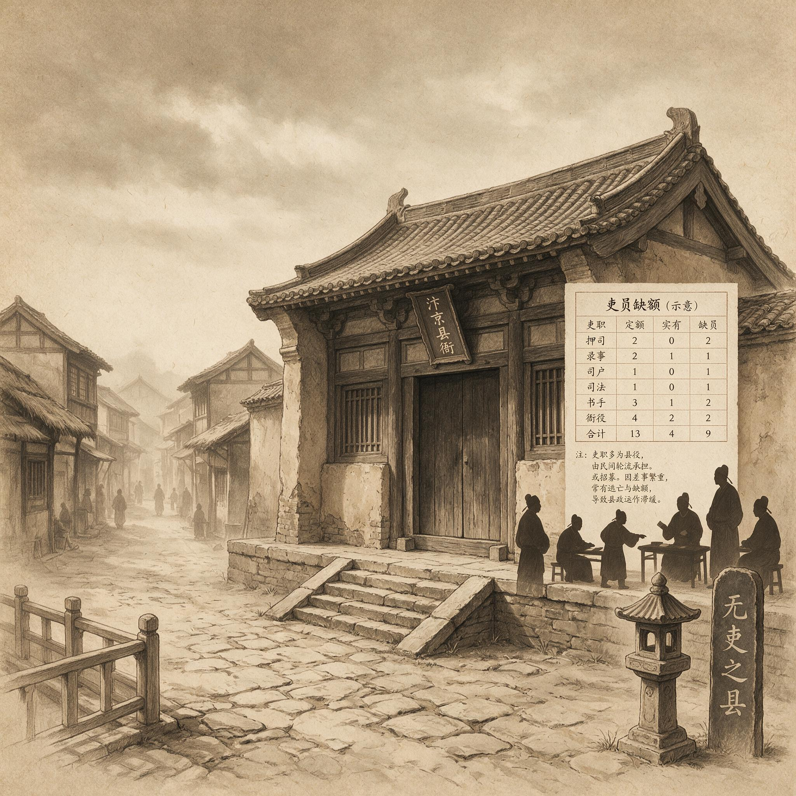

第 29 章
无吏之县
建炎四年的秋天，新任知县方允抵达清流县时，看到的是城门洞开、无人盘查的景象。城墙上的箭垛塌了一半，碎砖散落在街道上，长出了一尺高的野草。他带着一个老仆，两个包袱，一囊干粮，在城门口站了半个时辰，没有等到任何一个前来迎接的人。这不是怠慢。方允后来才知道，清流县已经三个月没有县官了。上一任知县在金兵过境时弃城而逃，县丞和主簿更早之前就不知去向。至于胥吏——方允沿着县城唯一的主街走向县衙时，老仆推开临街几间铺面的门板，里面空无一人，账簿散落一地，桌椅上积着半指厚的灰。
县衙的情况更糟。大堂的屋顶塌了半边，瓦砾堆在原本是知县审案的公座前，烧焦的梁木横在门槛上，踩上去发出碎裂的声响。方允绕过废墟，走进二堂，找到一间勉强完整的厢房。屋子里没有桌子，没有

无吏之县：历史出版插图
AI 生成插图，非史实影像。
椅子，墙角堆着几卷被雨水泡烂的文书，散发出霉烂的气味。老仆从包袱里取出一块布铺在地上，方允坐下来，开始思考一个问题：一个没有胥吏的县，该怎么治理？这个问题在方允此前的人生中从未出现过。
他是政和五年的进士，外放前在吏部做过两年令史，熟悉选官条法和考课程序，也读过不少关于治县理政的书籍。那些书告诉他，知县上任后要做的事情包括清查户口、催征赋税、审理词讼、督办学务，但没有任何一本书告诉他，做这些事情之前，首先需要有人——需要那些能写字、会算账、懂田亩、通方言、认得乡绅面孔的人。这些人就是胥吏。
在正常的县衙里，他们分成六房：吏房管人事，户房管田赋，礼房管祭祀，兵房管差役，刑房管狱讼，工房管营造。每房有司吏一人，典吏若干，下面还有书手、算手、门子、皂隶。一个中等规模的县，光是这些在册的胥吏就有四五十人，不在册的帮办和白役则更多。他们不是官，没有品级，俸禄微薄，但整个县衙的日常运转依赖他们就像人体依赖血脉。而现在，清流县的这条血脉断了。
方允用了三天时间走遍县城和近郊，发现情况比他预想的更糟。胥吏逃亡的原因不止是战乱。
金兵过境时，清流县并未遭到直接屠戮——金军主力走的是东路的官道，清流县地处山区岔路，只有一支百人规模的游骑经过，抢掠了两天便撤走。真正的破坏发生在金兵走后：溃散的宋军溃兵、本地的盗贼团伙、以及从邻县涌来的流民，在县城反复劫掠了一个多月。县衙是最先被洗劫的地方，因为那里存着粮簿、税册和户籍。劫掠者未必识字，但他们知道这些文书可以用来烧火取暖，于是六房架阁库里的档案被一捆捆地抱出来，在县衙院子里点起了篝火。方允在废墟里找到了那些篝火的痕迹：烧焦的纸灰堆在碎瓦之间，偶尔能辨认出半行字迹——“都保”“税钱”“折变”——然后便什么都看不清了。
没有簿籍意味着什么？意味着方允不知道清流县有多少户人家，多少亩田地，每户该交多少税，哪些人该服差役。朝廷的赋税征收依靠一套层层上报的文书系统：乡书手把各户田亩造册报给里正，里正汇总报给户房，户房核实后编成税簿，税簿再抄成两本，一本留县，一本报州。
这套系统从北宋初年运转至今，其间不断修补调整，形成了一套极为繁复的注记传统：田亩分等则，税钱分夏秋，折变有比例，减免有条款，每一笔记录背后都有一整套地方性的惯例在支撑。现在这些都没有了。方允手里只有一份吏部发给的告身，证明他是清流县的知县，以及一部《元丰法》——那是他在汴京书肆买的刻本，厚厚一函，收录了朝廷颁布的各种条法。他翻开户婚门，看到了关于田赋征收的详细规定：每亩田按等则征收若干税钱，夏税于五月十五日起征，秋税于九月十五日起征，逾期加收滞纳金，灾伤可申请减免。条文很清楚。但方允不知道清流县的田在哪里。
他决定亲自去丈量。这是建炎四年九月二十日的事情，距离他抵达清流县已经过去了十二天。这十二天里，他带着老仆清理出一间厢房作为临时住所，又从废墟里捡回一张缺了腿的公案桌，用砖头垫起来当办公桌。他还找到了县衙的大印——那枚铜印被扔在后院的枯井里，大概是劫掠者不识货，随手丢掉的。老仆用绳子缒下井去，捞了一个时辰才捞上来。
有了官印，方允就可以发布告示了。他亲手写了一张告示，贴在县城南门残存的城墙上，内容是通知各乡乡民，新任知县将于三日后下乡丈量田亩，各户户主须到场指认地界。告示用的是半文半白的语言，因为方允知道乡民大多不识字，需要靠识字的乡绅或行商念给他们听。他还特意在告示末尾加了一行字：“凡能提供旧年粮册、户帖、契书者，验实后有赏。”
三天后，方允带着老仆和一根竹竿去了县城东郊的第一都。竹竿是他自己削的，长一丈，用刀刻了尺寸刻度——这是他从《元丰法》里看到的丈量工具规制，原本应该由县衙工房统一制作并校准，但现在工房连废墟都不剩了。第一都到了三十多个乡民，大多是老人和妇女——青壮男子要么被溃兵拉去当了挑夫，要么逃进山里还没回来。
他们站在田埂上，看着方允手里的竹竿，表情既好奇又警惕。方允说明了来意：朝廷要征收秋税，必须知道各户实有田亩数，他今天是来重新丈量的。一个穿着半旧绸衫的老者从人群中走出来，自称姓陈，是本都的乡绅。他指着面前一片稻田说：“这一片都是草民的田，约莫二十亩上下。”方允问他有没有契书，陈乡绅说兵乱中都烧了。方允又问有没有旧年粮册的抄本，陈乡绅摇头说没有。方允只好自己丈量。
他让老仆拉着竹竿的一头站在田角，自己拉着另一头沿着田埂走，边走边数步数。陈乡绅和几个乡民跟在后面，每到一处转弯就有人喊：“大人，这边是李家的田了。”“大人，前面那条水沟过去就是王家的地界了。”方允停下来问：“李家的田有多少亩？”那人说：“大概七八亩。”方允又问：“王家呢？”另一个人说：“十来亩吧。”
方允把这些数字记在一张纸上。他记了整整一个下午，记满了三张纸，回到县衙后开始核算。核到半夜，他发现了一个问题：按照乡民们指认的地界和报出的亩数，第一都的田亩总数比他从《元丰法》里查到的中等县田赋基数少了将近一半。第二天他又去了第二都。情况更糟。第二都在山坳里，田地零碎分散在山坡上，方允爬了两个时辰的山路才找到那些地块。乡民们报出来的亩数同样偏低，而且有几块田的归属说不清楚——这块田原来是张家的，张家逃难走了，现在李四在种；那块田本来是官田，十几年前被前前任知县卖给了一个姓赵的揽户，赵揽户又转卖给了三家佃户，现在三家都说田是自己的。
方允回到县衙后对着那几页纸坐了整整一夜。他知道自己被乡绅们骗了——那些田亩数字明显偏低，地界指认也充满了刻意的混淆。但他没有办法戳穿这些谎言。他不知道清流县的地形，不认识那些乡民，听不懂他们的方言土语（他是北方人，清流县属于江南东路，方言与他熟悉的官话差异极大），更无从判断每一块田的历史归属。
在正常的县衙里，这些事情根本不需要知县亲自去做。户房的司吏手里有一整套田籍底册，那是几十年甚至上百年积累下来的档案，记录着每一都每一户的田亩数、等则、税额、过户记录。乡书手和里正负责每年的核实与更新，虽然其中不可避免地存在隐瞒和舞弊，但那些舞弊本身也是有规律可循的——胥吏们知道哪些乡绅势力大不能得罪，哪些田产纠纷背后有隐情需要搁置，哪些数字必须照实上报否则会引来上司追查。这些知识不是写在条法里的，而是通过师徒相授、同僚交流、年复一年的实际操作积累起来的。方允没有这些知识。他只有一根竹竿和一部《元丰法》。
丈量失败之后，方允尝试了另一种方法：直接审理词讼。他的想法是，通过审理田产纠纷，可以逐渐摸清清流县的土地关系，同时也能在乡民中树立威信——等乡民们知道新知县能断案、能主持公道，自然会愿意配合他的工作。第一桩案子是十月初三递上来的。告状的是一个叫刘三的农民，告同村的张六侵占他的田产。
方允在临时收拾出来的大堂里升座——公案桌还是那张缺腿的桌子，老仆从废墟里捡了一块木板垫在下面才勉强放平。刘三跪在堂下，操着一口浓重的方言开始陈述案情。方允听了半刻钟，只听懂了不到三成。他让刘三说慢一点。刘三放慢了语速，但方言还是方言，方允仍然只能听懂一半。他问张六有什么话说，张六的方言更重，方允几乎完全听不懂。两个人在堂下越说越激动，互相指着鼻子骂起来，方允坐在公案后面，一句都插不上嘴。这场审讯持续了一个时辰，最后以方允宣布“待查证后再审”告终。
他退入后堂，老仆端来一碗热水，他接过来喝了一口，忽然意识到一个问题：在正常的县衙里，审讯时站在公案旁边的刑房司吏会充当翻译和记录的双重角色——他既要把知县的官话转译成乡民能听懂的方言，又要把乡民的方言转译成知县能听懂的官话，同时还要把双方的陈述写成笔录。这个转译过程本身就是一种权力：司吏可以决定哪些内容被记录、哪些内容被忽略、哪些内容被改写。方允没有这个转译者。
他直接面对乡民，中间没有任何缓冲，结果就是双方互相听不懂对方在说什么。更糟糕的事情发生在十月十五日。那天州衙来了一份牒文，催促清流县缴纳秋税。牒文的措辞很严厉：清流县本年度秋税至今分文未纳，限十日内将税粮解送州仓，逾期按律追责。方允拿着这份牒文，感到了一种从未体验过的压力——在正常的县衙里，催征赋税是户房和乡书手的事情，知县只需要下达指令、审核账目、签字画押，具体的催征工作由胥吏们去完成。他们知道哪些户该交多少，哪些户可以宽限几天，哪些户需要上门催讨，哪些户必须动用到场威慑。方允没有这些执行者。
他只能自己再去一趟乡下。这次他选了离县城最近的第三都。他带着老仆挨家挨户敲门，手里拿着自己根据丈量结果估算的一份税册——说是税册，其实就是几张纸，上面写着各户户主姓名和一个大概的税额数字。他敲开第一户的门，出来的是一个老妇人，看见方允穿着官服，吓得跪在地上磕头。
方允说明来意，老妇人说家里没有粮食，儿子被溃兵拉走了，媳妇带着孩子回了娘家，她一个人靠挖野菜过活。方允去了第二户。这一户有人——一个中年汉子和两个半大孩子。汉子说今年收成不好，稻子只收了往年的一半，交完租子剩下的只够吃到年底。方允问他租子交给谁了，汉子说交给陈乡绅了——就是那个在第一都指认地界的老者。方允说租子可以缓交，但税粮必须交，这是朝廷的法度。
汉子跪下来求情，两个孩子在屋里哭起来。方允站在这户人家的门口，站了很久。他手里有朝廷的条法，条法规定不交税要受杖刑；他身上有知县的官服，官服赋予他强制执行朝廷法令的权力；他身后还有一个老仆，老仆可以帮他动手拿人。但他看着那个跪在地上的汉子和那两个哭泣的孩子，最终转身走了。
他知道问题出在哪里。不是乡民不愿交税——虽然确实有人不愿交——而是他根本不知道谁该交多少。陈乡绅收租子的那些田，在丈量时被报成二十亩，实际上可能有四十亩甚至更多；
而那个汉子种的地，在丈量时根本就没有被计入他的名下，因为陈乡绅说那是他自己的田。方允没有办法核实这些说法，他手中没有任何可以作为依据的文书。十一月，州衙又来了两道催缴牒文。方允知道不能再拖下去了。
他做了一件事情：从流民中招募人手。清流县城里聚集着不少流民，大部分是从北方逃难来的——金兵南下后，淮北、京东一带的百姓大批南迁，其中一部分流落到了这个山区小县。方允让老仆去流民聚集的城隍庙张贴告示，招募“略通文墨者”到县衙帮办文书。告示贴出去三天，来了七个人。
这七个人里，有两个是北方的落第秀才，一个是逃难的书商，一个是被溃兵打散的小吏（他在原籍做过三年乡书手），另外三个是识字的行商和工匠。方允把他们召到县衙那间勉强能遮雨的厢房里，告诉他们要做的事情：抄写文书、登记田亩、催征税粮。那个做过乡书手的人姓孙，三十多岁，原籍应天府。金兵破应天府后他随溃兵南逃，一路辗转到了清流县。
方允问他懂不懂田赋征收，孙书手说懂一些——在原籍时他负责三个都的税册造报，知道怎么计算等则和折变比例。方允如获至宝，当即任命他为临时户房司吏。
但孙书手很快发现，他在应天府学到的那些东西在清流县用不上。应天府的田赋征收有一套成熟的惯例：揽户负责代纳民户税粮，折变比例由揽户与胥吏协商确定，灾伤减免有固定的申请程序和核验标准。清流县没有揽户——战乱前有过几个，现在死的死逃的逃；清流县也没有核验灾伤的标准——旧年的底册已经烧了，没人知道哪块田该定什么等则。
孙书手只能自己摸索。他用方允丈量得来的那些不准确的数据作为基础，参考州衙下发的税额指标，倒推出每户应缴的税粮数字。这个数字当然是不公平的——有些户被多算了，有些户被少算了，还有些户根本没有被登记在册。但孙书手管不了那么多，他必须在十天之内凑够州衙催缴的税额。
催征的过程是粗暴的。方允从流民中又招募了十几个年轻力壮的男子充当临时弓手，由孙书手带着下乡挨户催讨。
他们没有旧年胥吏那种“先发催单、再上门协商、最后才动手”的程序意识——那些程序是几代人积累下来的经验，知道什么时候该紧、什么时候该松、什么时候该睁一只眼闭一只眼。孙书手和他的临时弓手们只知道一件事情：必须收到粮食。他们用木棍敲开乡民的门，把方允估算的税册拍在桌上，要求限期缴纳。不交的就把人带到县衙关进那间临时收拾出来的班房——说是班房，其实就是县衙后院一间没有窗户的柴房，地上铺些稻草就算牢房了。
方允对这种做法感到不安，但他没有别的选择：州衙的催缴牒文已经变成了问责文书，措辞从“限期缴纳”变成了“逾期按律参劾”，再收不上税，他自己就要被撤职查办了。十二月初，秋税终于凑齐了七成。孙书手雇了几辆牛车把粮食运往州衙所在的县城，来回走了六天。回来后他向方允报告：州衙的户曹参军对税额不足表示不满，但听说清流县的情况后也没有深究——毕竟战乱之后，能收到七成已经算是尽力了。方允松了一口气。但这口气只松了不到十天。
十二月十五日，第三都发生了一件事：一个姓王的农户被孙书手催征时发生冲突，临时弓手动了手，把王某打伤了。王某的族人聚集了二十多人来到县城，堵在县衙门口要说法。方允出来调解，发现来的人里有一个是陈乡绅的管家。管家转达了陈乡绅的意思：新知县催征太急，乡民不堪其扰；如果继续这样下去，各都乡绅将联名向州衙上书，控告知县“纵吏虐民”。
方允听完管家的话，忽然明白了一件事情：乡绅们不怕他。在正常的县衙里，乡绅与胥吏之间有一种微妙的平衡。胥吏掌握着田籍底册和催征程序，乡绅掌握着土地资源和地方舆论；胥吏需要乡绅配合才能完成税额，乡绅需要胥吏通融才能少报田亩；双方在长期的博弈中形成了一套心照不宣的规则：乡绅不挑战胥吏的基本权威，胥吏不在关键利益上过分逼迫乡绅。这套规则是由无数次的交涉、妥协、威胁和让步凝结而成的，它不成文但有效，不合法但稳定。现在这套规则不存在了。方允没有底册，无法核实乡绅的田亩；孙书手没有经验，不知道哪些人可以逼、哪些人不能碰；
临时弓手没有规矩，动不动就上手打人。乡绅们发现新知县的治理能力远不如旧年那些老胥吏——老胥吏虽然也催税，但懂得分寸；老胥吏虽然也舞弊，但讲究规矩；老胥吏虽然也欺压百姓，但知道什么时候该收手。
孙书手和他的同僚们不懂这些。他们只学会了催税的最表层动作——上门、摊派、威胁、动手——而完全没有学会那些动作背后的分寸感和平衡术。那些分寸感和平衡术不是写在条法里的，也不是一朝一夕能学会的；它们是胥吏这个群体在几十年甚至上百年的时间里，通过与乡绅、与百姓、与上级官府反复博弈积累下来的治理技艺。
这种治理技艺有一个特点：它无法通过书面传授。方允从周押录那里得到的那册旧簿籍里记载了许多注记——“寄田”“诡名”“逃户”“灾减”——但那些注记只是结果，不是方法；它们告诉你某块田最终被登记成什么样子，却不告诉你为什么这样登记、经过了谁的同意、付出了什么代价、避免了什么麻烦。
这些东西只存在于胥吏的头脑里和口头传授中，当胥吏这个群体整体消失后，这些知识就随之消失了。
建炎五年的春天，清流县的行政机器以一种粗糙而暴烈的方式重新运转起来了。孙书手和他的同僚们——现在已经有十五个人了——分成三组，每组负责几个都的催征和登记。他们用方允从州衙借来的一部旧《元丰法》作为依据，结合自己的理解和记忆，重新编制了清流县的税册和户籍。
这部新税册的质量是可想而知的。孙书手后来在一次酒后向方允承认，许多数字是“估摸着写的”——这块田大概多少亩，那户人家大概多少口，这个都大概该交多少税。他说这不是因为他不想做得更准确，而是因为他根本不知道怎样才能做得更准确。旧年的底册烧了，乡绅们报的数字不可信，丈量的结果互相矛盾，他只能在各种不确定的信息之间取一个大概的平均值。这个平均值当然不是真实的——它既高于某些穷户的实际承受能力，又低于某些富户的实际应纳税额；它既不符合朝廷的等则规定，也不符合地方的实际情况；
它是一个悬浮在制度与事实之间的虚构数字，唯一的用处是让州衙不再发牒催缴。
但这种虚构是有代价的。那些被高估了税额的穷户不得不借粮交税，还不起的就卖田卖房，或者干脆举家逃亡；那些被低估了税额的富户则暗自庆幸，更加积极地维护这套新的征税体系——他们发现新知县的胥吏比旧年那些老胥吏更好糊弄，更容易被蒙骗。而那些逃亡的农户留下的空田，很快就被乡绅们以各种名目占去了。孙书手无力核实这些田产转移的合法性——他没有旧档可查，没有师承可问，没有经验可依；他只能按照乡绅们自报的数字登记造册，而这些数字与实际情况之间的差距越来越大。
方允看到了这些问题，但他无力纠正。他不是不知道正确的做法应该是什么——他在吏部做过令史，读过许多关于田赋征收的条法和案例；他知道应该先清查田亩、核实等则、建立底册，然后再据实征收；他知道应该与乡绅协商折变比例、与揽户约定代纳办法、与灾户核实减免条件。但知道是一回事，做到是另一回事。
他没有足够的胥吏来做这些事情——现有的十五个人连日常催征都忙不过来，根本不可能抽出时间去做细致的清查核实工作。
更重要的是，这十五个人本身也在发生变化。孙书手开始接受乡绅的馈赠——最初是一壶酒、一块肉，后来是几贯铜钱；作为回报，他在登记田亩时对某些地块的等则做了“调整”。另外几个书手也各自找到了自己的“门路”：有人与揽户勾结虚报税额，有人私刻乡绅印章伪造契书，有人把逃亡户的田产悄悄划到自己名下。
方允发现这些事情时，已经过去了大半年。他把孙书手叫到面前质问，孙书手跪下来认错，但随即反问了一句：“大人，您让我们做胥吏的事，可您给我们的俸禄连糊口都不够。我们不自己想办法，怎么活得下去？”
方允沉默了。他知道孙书手说的是实情。朝廷给胥吏的俸禄本来就极低——一个县衙司吏的月俸通常只有三五贯钱，典吏更少，书手和算手则几乎没有固定俸禄，全靠收取各种“规费”维持生计。这套制度设计的前提是胥吏都是本地人，有自己的田产或别的收入来源，衙门俸禄只是补贴而非主要生活来源。但孙书手他们是流民。他们在清流县没有田产，没有亲戚，没有任何俸禄之外的收入来源。方允从县衙的公费里挤出一些钱发给他们作为月俸，但数额远不足以维持生计——清流县的公费本来就少，战乱后也是所剩无几。
于是方允面临了一个两难选择：要么默许孙书手他们自己“找门路”，要么把他们全部革退重新招募。前者意味着承认腐败合法化，后者意味着行政机器再次停摆。他选择了前者。不是因为他认同腐败，而是因为他没有别的选择。
建炎五年秋天的一个傍晚，方允坐在县衙那间厢房里，面前摊着孙书手送来的秋税征收册。册子是用粗糙的竹纸装订的，字迹潦草而混乱，许多数字被涂改过，有些页码甚至被撕掉了又重新粘贴。
他翻了几页便放弃了细看的念头——这些数字的真实性已经无法核实，他唯一能确认的是总额勉强达到了州衙的指标。窗外传来嘈杂的人声。方允走到门口，看见孙书手和几个弓手押着一个被绑着的乡民走进县衙后院。那乡民满脸是血，嘴里不停地用方言喊着什么，方允听不太懂，只隐约辨认出“冤枉”两个字。
老仆走过来低声告诉他：那人是第二都的农户，因为抗税被打了一顿，关进了柴房。这已经是这个月第三个被关进去的人了。方允站在厢房门口，看着暮色中县衙后院的景象：临时弓手们蹲在墙根下啃干粮，孙书手坐在门槛上数铜钱，柴房里传出含糊的呻吟声和哭泣声。院子角落里堆着一堆从各都收来的税粮——稻谷、麦子、豆子混在一起，有的装在麻袋里，有的散堆在地上，几只老鼠正在谷堆上爬来爬去。
这就是清流县的行政机器。它确实重新运转起来了——赋税在征收，词讼在审理，户籍在登记；但它运转的方式比旧年那些老胥吏时代更加粗暴、更加混乱、更加不公。
那些老胥吏至少还讲规矩——催税有“三限”之制，初限发催单，中限上门催讨，末限才动手拿人；断案有调解之规，田土纠纷先由乡绅调解，调解不成才入官审理；差役有轮差之法，按户等轮流派差，富户多派重差，贫户少派轻差。
孙书手他们不讲这些规矩——不是因为他们天生比老胥吏更坏，而是因为他们根本不知道这些规矩的存在。那些规矩没有被写进《元丰法》里，它们存在于旧年胥吏的口头传授和实际操作中，随着那些胥吏的逃亡和死亡而永远消失了。
方允回到桌前，重新翻开那本粗糙的秋税征收册。他想起了一年多前从周押录那里得到的那册旧簿籍——那本簿籍上密密麻麻的注记，那些“寄田”“诡名”“逃户”“灾减”的字样，那些看似普通却暗藏玄机的数字和符号。那册簿籍记录的不仅是一县的钱粮账目，也是一整套将国家权力转化为基层可操作程序的中介机制。现在这套中介机制消失了。取而代之的是孙书手们用木棍和绳索维持的最粗糙的秩序。
这种秩序当然是不稳定的——它依赖暴力而非惯例，依赖强制而非共识，依赖个人意志而非制度传承；它随时可能崩溃，或者退化为更加赤裸的掠夺。
但这就是无吏之县的必然结果。当胥吏这个阶层整体消失后，基层治理并不会走向士人理想中的清明之治——那些应举不第的士子们既无能力也无意愿去掌握复杂的治理技艺；基层治理只会退回到一种更原始的状态：强权即公理，暴力即秩序，而乡民们则开始怀念从前那些“讲规矩”的老胥吏。
方允合上簿籍，抬头看向窗外。夜色已经完全降临了。远处柴房里传出的呻吟声渐渐低了下去，不知是那人睡着了还是昏过去了。院子里孙书手数完了铜钱，站起来伸了个懒腰，朝厢房这边走来——他大概是要来汇报今天的催征成果。而在县城南门外的那片废墟里，一个从北方逃来的流民正在瓦砾堆里翻找可以烧火的木柴。他的手指碰到了一团焦黑的纸灰，纸灰下面露出半页没有被完全烧毁的旧公文，上面模模糊糊地写着三个字——“实征册”。他不识字，把那半页纸连同别的碎纸一起塞进怀里，准备明天用来引火。